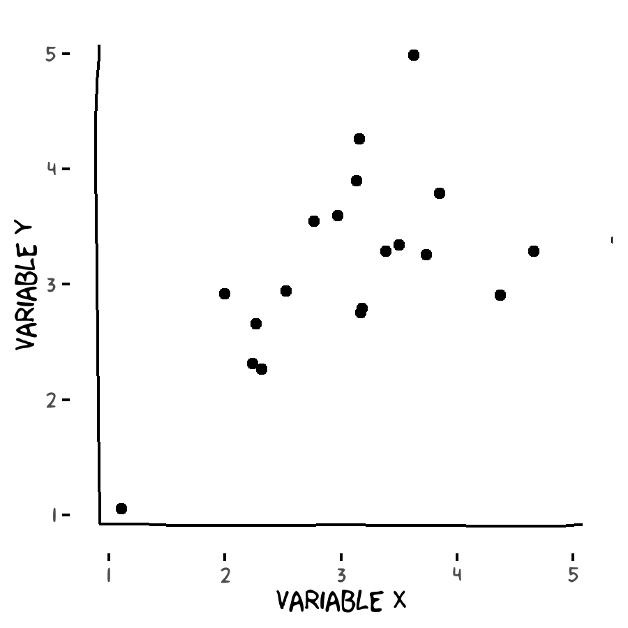
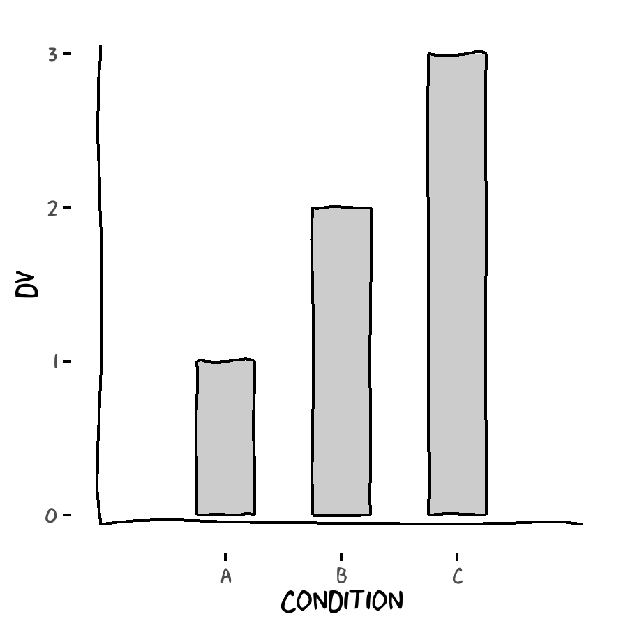
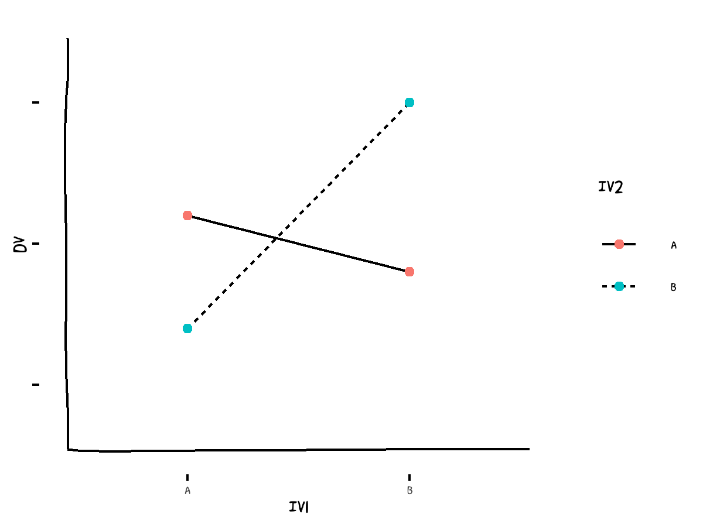

Appendix C — Summary of Basic Statistics
Analyzing data
Once a researcher has gathered data from an experiment, she needs to interpret the data. Of course, you could just list the individual observations and try to form an intuition about the general outcome, but there are more formal means to determine whether the experimental manipulation had an effect. A statistical description summarizes the data in a way that permits interpretation.
Note that even though you will be proposing a piece of research and not actually collecting or analyzing data, familiarity with the following statistical concepts and procedures will be essential for you to propose an appropriate analysis for your proposed design, and for you to meaningfully interpret the potential results of such a design.
Descriptive statistics
The first step is to describe your data. These kinds of statistics are called descriptive statistics or summary statistics. With an experimental design where you want to compare groups, the most obvious place to start is to find an average value for the observations in a group. The average, or mean, is a measure of typical performance; it summarizes all the scores and produces a single number which represents the most typical value. The basic formula for the mean of a set of scores is:
\[ M = \dfrac{\Sigma X}{n} \]
In this equation, \(X\) refers to all the scores in the group, and n is the number of scores in the group. The symbol \(\Sigma\) instructs you to sum all the scores. A simple way of saying the formula in words is: Add up all the scores in the group and divide by the number of scores in that group. If you experiment involves comparing two or more groups, you can obviously calculate the mean of each group of scores separately. If the means are different, maybe your experimental manipulation had an effect.
However, there is always variability in the scores in a group. The mean is a central value, but some scores fall below it and others above it. Therefore, researchers also need to describe the amount of variability in scores. This puts the mean in context, describing just how representative of all the scores it is. If there is high variability, scores are spread widely and the mean is relatively unrepresentative; if there is low variability, scores are clustered tightly and the mean is relatively representative. When variability is high, the group means might be different just due to chance, not because of your experimental manipulation.
A mathematical way of describing the amount of variability in a group of scores is to calculate the deviation of each score from the mean, square the deviations, and then sum the squared deviations. This quantity is called Sum of Squares (SS). One mathematical formula is:
\[ SS = \Sigma(X - M)^2 \]
Dividing SS by the number of scores in the group minus 1 produces a quantity called variance, which is represented by the symbol s2. Variance is the average squared deviation. (Remember that to calculate an average, you add a set of scores and divide by n. Here we add a set of deviations and divide by n – 1. We use n – 1, rather than just n, because it is a necessary statistical adjustment to account for the fact that samples tend to underestimate variability.)
\[ s^2 = \dfrac{\Sigma(X-M)^2}{n-1} \]
Taking the square root of the variance produces another quantity, called standard deviation. It is represented mathematically by the symbol s, but in psychology papers you will most often see it represented by the letters SD.
\[ SD = \sqrt{\dfrac{\Sigma(X-M)^2}{n-1}} \]
While variance is the average squared deviation, SD is the average deviation in the original units (i.e. not squared). This is the most intuitive way to convey how much scores typically varied about the mean.
Inferential statistics
Knowing the standard deviation and mean for each experimental group gives you a good idea of how much scores differed within each group, and how much the groups differed on average. But researchers still need to perform a statistical test to determine whether the groups differed more than would be expected by chance alone. These kinds of statistical tests are called inferential statistics, because we are using our sample data to make an inference about what would happen if everyone in the population had taken part in our experiment, rather than just the small number of people who happened to be in our samples.
Correlation
When you measure two variables and wish to know if scores on one measure are related to scores on the other, you calculate the correlation coefficient. This quantifies the extent to which changes on one measure are related to changes on the other. For example, if higher scores on measure X are associated with higher scores on measure Y, there is a positive correlation. If higher scores on measure X are associated with lower scores on measure Y, there is a negative correlation. No correlation means that scores on X are unrelated to scores on Y.
To calculate the correlation between two variables, you must first calculate the Sum Product, SP. The mathematical formula is:
\[ SP = (X-M_X)(Y-M_Y) \]
Notice that \(X - M_X\) and \(Y - M_Y\) are deviation scores, just like we calculated for the standard deviation. Here we have two variables, \(X\) and \(Y\), so the equation is telling us to calculate the deviation of each score from its respective mean. We then multiply each deviation for variable \(X\) by its counterpart deviation from variable \(Y\). These are the “products,” meaning multiplied deviation scores. Finally, the tells us to add up all those products, giving the “sum of products,” \(SP\).
Once we have calculated \(SP\), the correlation coefficient, symbolized by \(r\) is calculated using the following equation:
\[ r = \dfrac{SP}{\sqrt{SS_X SS_Y}} \]
Here, \(SS_X\) and \(SS_Y\) are the Sums of Squares for each variable. Multiplying them and taking the square root gets us a measure of the variability in \(X\) and \(Y\) separately. The numerator, \(SP\), represents the covariability of \(X\) and \(Y\). So the equation results in covariability as a proportion of all variability. It can range from \(-1\), meaning a perfect negative correlation, to \(0\), meaning no correlation at all, to \(+1\), meaning a perfect positive correlation. As a rule of thumb, in psychology, correlations of less than around \(\pm 0.30\) are considered weak, around \(\pm 0.30\) to \(\pm 0.70\) are considered moderate, and greater than around \(\pm 0.70\) are considered large.
The \(t\)-test
| df | t |
|---|---|
| 1 | 12.706 |
| 2 | 4.303 |
| 3 | 3.182 |
| 4 | 2.776 |
| 5 | 2.571 |
| 6 | 2.447 |
| 7 | 2.365 |
| 8 | 2.306 |
| 9 | 2.262 |
| 10 | 2.228 |
| 11 | 2.201 |
| 12 | 2.179 |
| 13 | 2.160 |
| 14 | 2.145 |
| 15 | 2.131 |
| 16 | 2.120 |
| 17 | 2.110 |
| 18 | 2.101 |
| 19 | 2.093 |
| 20 | 2.086 |
| 21 | 2.080 |
| 22 | 2.074 |
| 23 | 2.069 |
| 24 | 2.064 |
| 25 | 2.060 |
| 26 | 2.056 |
| 27 | 2.052 |
| 28 | 2.048 |
| 29 | 2.045 |
| 30 | 2.042 |
| 31 | 2.040 |
| 32 | 2.037 |
| 33 | 2.035 |
| 34 | 2.032 |
| 35 | 2.030 |
| 36 | 2.028 |
| 37 | 2.026 |
| 38 | 2.024 |
| 39 | 2.023 |
| 40 | 2.021 |
One test to compare two groups of scores is the \(t\)-test. One form of the \(t\)-test formula, assuming that the two groups have equal sample sizes, is as follows:
\[t = \dfrac{M_1-M_2}{\dfrac{s_1^2}{n_1}+\dfrac{s_2^2}{n_2}}\]
The numerator is simply the difference between the group means (the different group means are represented by the subscripts \(1\) and \(2\)). The denominator quantifies how much of a difference is to be expected due to chance alone. It divides each group variance (\(s^2\)) by the number of scores in that group, adds the answers, and then takes the square root.
The size of the \(t\) statistic required to conclude that a difference between groups is real depends on the size of the samples (how many observations you took). The greater the number of observations, the smaller the \(t\) required to identify a real difference. In order to determine the exact value of \(t\) required to declare the difference in groups to be reliable, several values must be determined.
One of these is the degrees of freedom for the test (\(df\)). The degrees of freedom, \(df\), is another statistical correction that weights the number of observations in each experimental group. Basically, we lose one degree of freedom for each group, so with two groups, \(df = N – 2\) (\(N\) being the total number of scores), or:
\[df=(n_1-1)+(n_2-1)\]
The other quantity to determine is alpha (\(\alpha\)), or the significance level. By convention, this is usually set at \(\alpha = .05\). This means that you are willing to chance being incorrect in your conclusion \(.05\) (or 5%) of the time. More specifically, if you were able to repeat your experiment a hundred times, even if your experimental manipulation does nothing at all sometimes you would observe group means that are quite far apart just by chance alone. Specifying \(\alpha = .05\) means that you will only regard a difference between means as statistically significant if it is one so large that it would occur just 5% of the time if your manipulation didn’t actually work.
Once you know \(df\) and \(\alpha\), you can proceed. Associated with each \(df\) value is a critical \(t\) value (see table to the right). This is a cutoff value; if the \(t\) statistic you calculate for your data exceeds this critical cutoff, you conclude that there is a statically significant difference between the groups, i.e. the groups differ more than would be expected by chance alone 95% of the time (with \(\alpha = .05\), there is always a 5% chance of seeing such a difference by chance).
Many tables of these cutoff values of \(t\) are available, for the many possible values of \(df\) and \(\alpha\). Here, we provide a table that provides a table that assumes \(\alpha = .05\). Look at the table and run down the \(df\) column until you find the value of \(df\) that matches the value for your data. The number to the right of that value is the critical value for \(t\) at the \(\alpha = .05\) significance level.
Effect size for two-group designs
In addition to knowing whether a difference between two groups is statistically significant, it is necessary to quantify the effect size. The most common measure of effect size for two-group designs is Cohen’s \(d\). This is standardized way of quantifying the magnitude of difference between groups caused by the experimental manipulation, in relation to the random variability in the data. Again assuming that the two groups have the same sample size, the formula for Cohen’s \(d\) is:
\[d = \dfrac{M_1 - M_2}{(SD_1+ SD_2) / 2}\]
The numerator gives the difference between group means. The denominator adds each group’s standard deviation and divides by two to give the average standard deviation of the two groups (also called pooled standard deviation). Therefore, if Cohen’s \(d = 1.00\), there was a difference between the groups of one standard deviation.
Cohen suggested the following rule of thumb for interpreting effect sizes in psychological research: \(d = 0.2\) indicates a small effect; \(d = 0.5\) indicates a moderate effect; \(d = 0.8\) indicates a large effect.
Statistical power and sample size for two-group designs
An important aspect to consider when planning research is what sample size will be required—i.e, how many participants you should aim to recruit. This can be calculated in advance by using statistical principles and some assumptions about the quantities previously mentioned.
First, consider alpha. As previously mentioned, for psychological research this is usually set as \(\alpha = .05\). This is also known as the Type 1 error rate, or false positive rate—the frequency at which you would mistakenly think that your experimental manipulation had an effect when really it didn’t.
Second, the Type 2 error rate, or false negative rate, is how often you might fail to detect a real effect of your manipulation. This quantity is called beta (\(\beta\)). It is related to alpha; a smaller alpha means a more stringent test, which means we are deliberately reducing our chances of detecting a real effect. But beta is also affected by sample size. The more participants in a study, the greater statistical power it will have, because increasing sample size makes it easier to detect real differences. For psychological research, it is common to specify a desired Type 2 error rate of 20%. The corresponding 80% is called the statistical power of the study: the chances that it will successfully detect the treatment effect it is designed to detect.
Third, as previously explained, Cohen’s \(d\) measures effect size by dividing the size of difference between group means by the pooled standard deviation. You should be able to estimate the effect size you expect your manipulation to have based on previous research which has studied similar constructs. Failing that, you should specify the minimum effect size you would be willing to accept as meaningful.
Knowing the values for alpha, power, and effect size allows you to calculate the required sample size. The following is an approximate equation for calculating the required sample size:
\(n = \dfrac{2(Z_a + Z_B)^2}{d^2}\)
Here \(d\) is Cohen’s effect size. \(Z_a\) and \(Z_B\) are constants based on the mathematical properties of the normal distribution and our specified values for alpha (\(.05\)) and desired power (\(.80\)). For these values, \(Z_a = 1.96\); \(Z_B = .8416\). So if you expected your manipulation to cause a small effect (\(d = 0.2\)), you would require \(2 * (1.96+0.8416)^2 / 0.22 \approx 393\) participants in each condition. For a large effect size like \(0.8\), you would require \(2 * (1.96+0.8416)^2 / 0.80 \approx 25\) participants per condition.
ANOVA
The Analysis of Variance (ANOVA) test is an extension of the \(t\) test. It is used where there are more than two groups to be compared. ANOVAs look at the ratio of variance between groups (deviations of group means from a grand mean) to error variance (deviation of individual scores). The larger the ratio, the more likely it is that the differences among groups are due to the experimental manipulation and not just due to chance.
ANOVA can even be used with more than one independent variable. Experiments often manipulate more than one independent variable, and examine the effects of those variables using ANOVA. This kind of analysis is called a “factorial” ANOVA, because there is more than one “factor”, meaning independent variable. The experimental design is referred to by the number of “levels” (meaning conditions) of each factor. For example, if a design has two independent variables, each with two different conditions, it would be referred to as a 2x2 ANOVA design. A 4x3x2 design has one factor with four levels, another factor with three levels, and a third factor with two levels.
These experiments can potentially describe the real world more completely and realistically. Consider the following example.
Some research on people’s perceptions of procedural justice and fairness suggests that people feel they’ve been treated fairly when they get what they want. Some other research, however, suggests that people feel they’ve been treated fairly when they get what they deserve. So if you have behaved badly and you are then treated badly, you might be satisfied and say it was fair. A study to examine this hypothesis might manipulate people’s behavior as one independent variable; participants could put in a situation where they are led to behave either positively (not cheating on a test) or negatively (cheating on a test). The second independent variable might be how a research assistant then treats the participant, either respectfully or disrespectfully. This would be a 2x2 design—two IVs, each with two levels. The dependent variable—the thing that the researcher measures—might be participants’ feeling of how fairly they were treated.
Factorial designs are more complicated to interpret, because of the more complicated design. One type of information we get is about the effect of each variable by itself. This is called the main effect. With two independent variables, there are two main effects. In the example above, either behavior or treatment could have had a significant effect on perceived fairness.
The second type of information we get from factorial designs is called an interaction. If there is an interaction, the effect of one independent variable depends on the level of the other independent variable. So in the above example, one outcome may be to find a main effect of treatment but no interaction; people might simply think they have been treated fairly when they were treated with respect, regardless of their actual behavior. However, another possible outcome would be to find an interaction between treatment and behavior; maybe your perception of the fairness of your treatment depends on how you behaved. If you are treated poorly but you did something to deserve it, you might perceive it as fair. One the other hand, being treated respectfully for bad behavior might be perceived as unfair. This would indicate an interaction.
Effect size & power for ANOVA
The small, free application G*Power can help you determine required sample sizes for ANOVA designs. http://www.gpower.hhu.de/
Visualizing data
Even though you won’t be collecting data, you will be forecasting plausible-seeming results. Doing so requires understanding at least the gist of the relevant statistics as described above. One other piece of the puzzle is thinking about your hypothetical data and results visually: how would it look as a graph? In fact, if you’re unsure about what results to expect, or you’re unsure whether your expected results are really plausible, thinking about a corresponding graph can help clarify your thinking.
There are a few standard ways of visualizing data, depending on the nature of the data and the design of the study. (Note that my examples here are deliberately rough; a pencil sketch is perfectly fine as long as it is clear.)
For bivariate correlational data, a scatterplot is usually appropriate. This will have a labelled x-axis and y-axis, one for each of your two variables. Which variable goes on which axis is somewhat arbitrary, though if you can think of your variables as a “predictor” (something you would know about a person) and “predicted” (the variable you want to predict based on the predictor), you can put the predictor on the x-axis and predicted on the y-axis (see Figure 1).

For comparing groups—either two groups in a t-test design or three (or more) groups in a single-factor ANOVA design—a bar graph is often the best choice. Here the categorical grouping variable will be on the x-axis and scores on the dependent variables will be on the y-axis. Each bar represents a different group, and the height of the bar represents the average score on the DV of all participants within that group.

For a 2x2 ANOVA design, a line graph can be clearest. In this case, one IV is represented as two marks on the x-axis, and the second IV is represented by separate lines (different colors, or solid and dashed, say). The y-axis represents scores on the DV.
